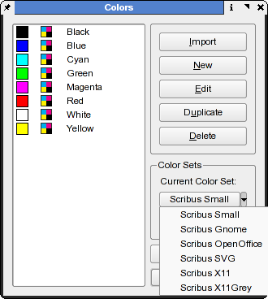

Within Scribus there are several methods to create, import and edit colors in a document. Which method to follow, depends on if you need to replicate or import colors from another Scribus document or other third party documents. These third party documents could be an EPS, SVG or other vector format files. Moreover, Scribus has a well developed tool, the Color Wheel plug-in, which helps to guide you selecting complementary colors, as well as visualize colors seen by folks with certain kinds of color-blindness.
Let us start by looking at Color Sets:
By default, Scribus comes with a handful of very useful color sets, which can be used as a basis for creating new colors or color sets. You can then reuse these sets in all future documents. It is helpful to understand the differences between RGB and CMYK color models and I recommend you have color management properly set up and enabled when using CMYK color sets. Remember, true CMYK colors cannot be shown directly on a computer monitor; they can only be simulated. Color Management, when enabled, presents a truer representation of colors when printed using CMYK inks. Note, that most common desktop inkjet printers are actually what we call an RGB device, like a monitor. This is because their drivers expect RGB color data and do the RGB to CMYK conversion internally via the driver and/or a combination of driver/firmware in the printer.
One other term which is handy to know is in page layout color sets are also known as swatches, much like a swatch book of fabrics or paints.
You can choose the default color set for all documents by closing all documents and then picking one from the Color Editor Palette.
|  |
From the Color Manager you can import colors from other Scribus documents or from vector based EPS, PostScript or AI (Adobe Illustrator®) files. This includes spot colors which are special named colors. To import the colors only, click the Import button and then change the file type drop down to show non-Scribus files.
Not all files will have colors which can be imported, even if they are PostScript based. Why? Not all programs save DSC (Document Structure Convention) comments properly and incompatible proprietary extensions which do not follow the Postscript specification properly.